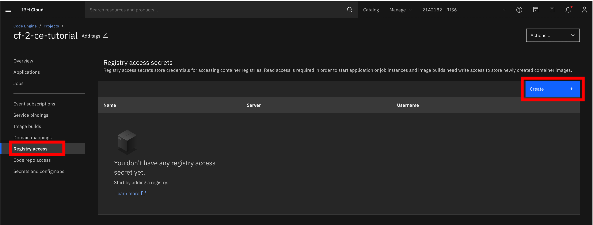
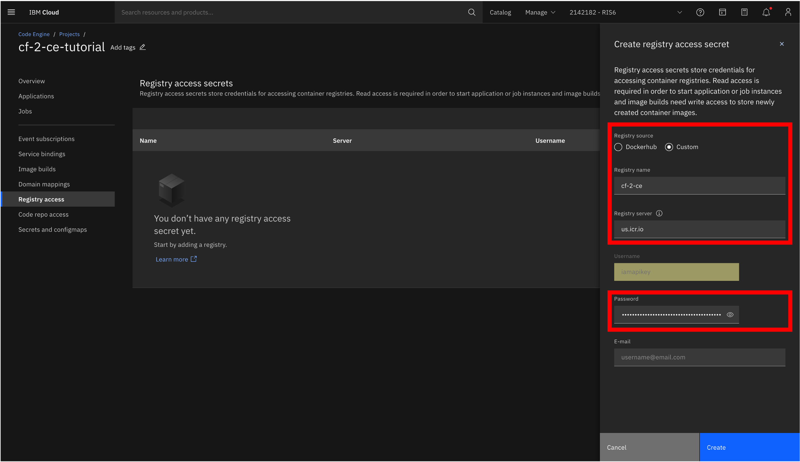
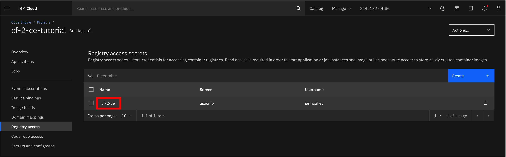
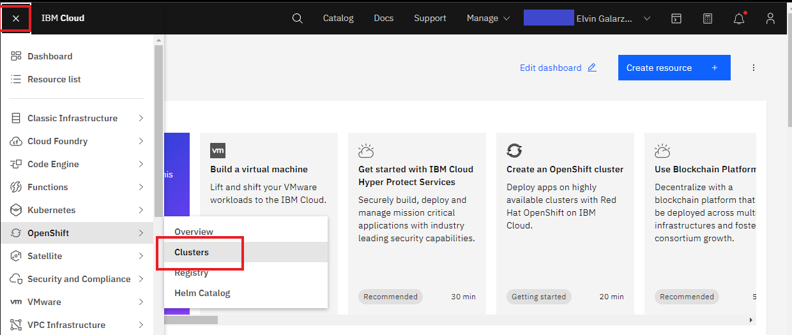
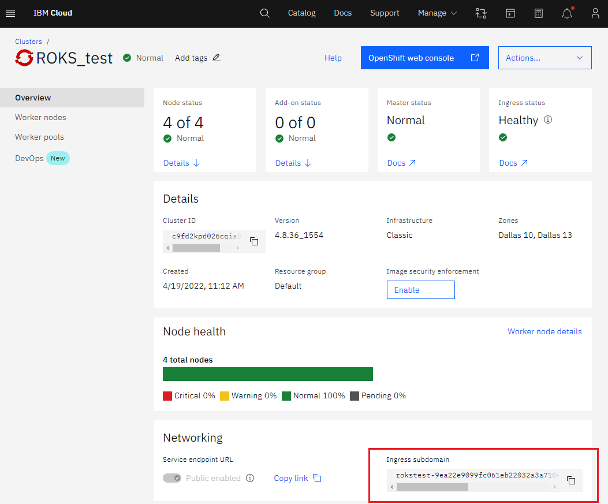
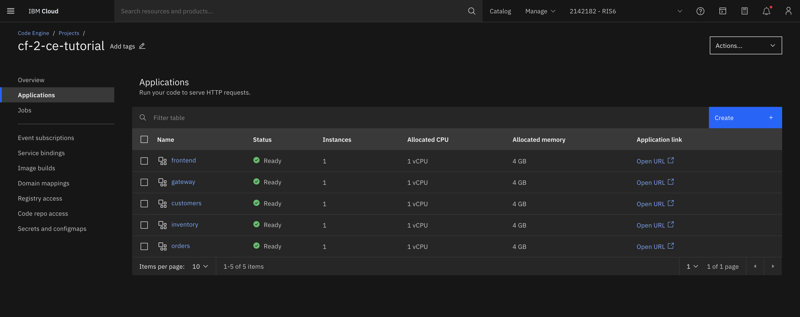
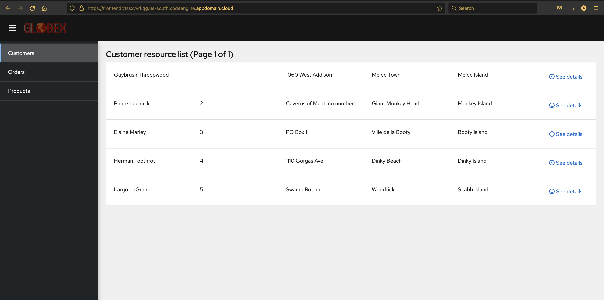

Steps for migrating to IBM Code Engine¶
Perform a transformation on your IBM Cloud Foundry application via move2kube transform
The Cloud Foundry to Code Engine/IKS/ROKS custom transformer can be used with Move2Kube for migrating Cloud Foundry applications to Code Engine (CE), IBM Cloud Kubernetes Service (IKS), and Red Hat OpenShift Kubernetes Service (ROKS). Move2Kube automatically analyzes all the source artifacts and transforms and creates all the target artifacts required for deploying the application in CE/IKS/ROKS in one go.
Prerequisites
Source code: The source directory which contains the source code files of the Konveyor's enterprise-app application
curl https://move2kube.konveyor.io/scripts/download.sh | bash -s -- -d samples/enterprise-app/src -r move2kube-demosInstall Move2Kube
MOVE2KUBE_TAG='v0.4.0-alpha.0' bash <(curl https://raw.githubusercontent.com/konveyor/move2kube/main/scripts/install.sh)Custom transformer: Download the custom transformer from the move2kube-transformers GitHub repository.
curl https://move2kube.konveyor.io/scripts/download.sh | bash -s -- -d cloud-foundry-to-ce-iks-roks -r move2kube-transformersCreate and setup a Code Engine project: Code Engine project where we can deploy the applications.
Login to IBM Cloud.
ibmcloud login --ssoYou can list down the resource groups using the below command.
ibmcloud resource groupsSpecify your resource group and the region using the target command.
ibmcloud target -g <RESOURCE_GROUP_NAME> -r <REGION>Install the Code Engine plug-in.
ibmcloud plugin install code-engineCreate a new Code Engine project
ibmcloud ce project create --name cf-2-ce-tutorialOutput:
Creating project 'cf-2-ce-tutorial'...
ID for project 'cf-2-ce-tutorial' is '1ef688f5-0256-4b21-ae48-390e56312b05'.
Waiting for project 'cf-2-ce-tutorial' to be active...
Now selecting project 'cf-2-ce-tutorial'.
OKCreate a registry access secret in your Code Engine project so that the images can be pulled or pushed from the target image registry like us.icr.io.
Click on "Registry access" in the left navigation pane in your Code Engine project. Then click on the "Create" button.

If you are using any image registry other than Docker Hub then select the "Custom" button. Enter a name for your registry access "cf-2-ce".
Enter the name of the registry server. If you are using IBM Cloud Container Registry the server name is <region>.icr.io (for example, "us.icr.io"). For Docker Hub, the server name is "https://index.docker.io/v1/".
Enter the username and password. For IBM Cloud Container Registry, the username is "iamapikey" and password is your API key. For Docker Hub, the username is your Docker ID and the password is your Docker password.


Now all the steps required in the prerequisites are completed, we are ready to run move2kube transform on our source code.
Running move2kube transform
Run the transform phase on the source directory containing the source code artifacts. Here, we specify the path to the custom cloud-foundry-to-ce-iks-roks transformer with -c flag.
In the transform phase, you'll be asked a series of questions related to the application itself, your Code Engine image secret key, image registry, your cluster (for IKS/ROKS deployment), etc.
move2kube transform -s src -c cloud-foundry-to-ce-iks-roks Keep the default selection (press Enter).
Output:
? Specify a Kubernetes style selector to select only the transformers that you want to run.
ID: move2kube.transformerselector
Hints:
- Leave empty to select everything. This is the default.
Keep the default transformer type (press Enter).
Output:
? Select all transformer types that you are interested in:
ID: move2kube.transformers.types
Hints:
- Services that don't support any of the transformer types you are interested in will be ignored.
[Use arrows to move, space to select, <right> to all, <left> to none, type to filter]
> [✓] ArgoCD
[✓] Buildconfig
[✓] CECNBTransformer
[✓] CEDockerFileTransformer
[✓] CNBContainerizer
[✓] CloudFoundry
[✓] ComposeAnalyser
[✓] ComposeAnalyser
[✓] ComposeGenerator
[✓] ContainerImagesPushScriptGenerator
[✓] DockerfileDetector
[✓] DockerfileImageBuildScript
[✓] DockerfileParser
[✓] DotNetCore-Dockerfile
[✓] EarAnalyser
[✓] EarRouter
[✓] Golang-Dockerfile
[✓] Gradle
[✓] IKSClusterSelector
[✓] IKSKubernetes
[✓] Jar
[✓] Jboss
[✓] Knative
[✓] KubernetesVersionChanger
[✓] Liberty
[✓] Maven
[✓] Nodejs-Dockerfile
[✓] OperatorTransformer
[✓] OperatorsFromTCA
[✓] PHP-Dockerfile
[✓] Parameterizer
[✓] Python-Dockerfile
[✓] ROKSClusterSelector
[✓] ROKSKubernetes
[✓] ReadMeGenerator
[✓] Ruby-Dockerfile
[✓] Rust-Dockerfile
[✓] Tekton
[✓] Tomcat
[✓] WarAnalyser
[✓] WarRouter
[ ] WinConsoleApp-Dockerfile
[ ] WinSLWebApp-Dockerfile
[✓] WinWebApp-Dockerfile
[✓] ZuulAnalyserType "y" and press Enter to allow container based transformers. This step could take few minutes.
Output:
? Allow spawning containers?
ID: move2kube.spawncontainers
Hints:
- If this setting is set to false, those transformers that rely on containers will not work.
(y/N) yKeep the default services (press Enter).
Output:
Yes
INFO[0006] Pulling container image quay.io/konveyor/hello-world. This could take a few mins.
INFO[0014] Pulling container image quay.io/konveyor-move2kube-transformers/run-tca:latest. This could take a few mins.
INFO[0178] Configuration loading done
INFO[0178] Start planning
INFO[0178] Planning started on the base directory
INFO[0178] [CloudFoundry] Planning
INFO[0184] Identified 5 named services and 0 to-be-named services
INFO[0184] [CloudFoundry] Done
INFO[0184] [ComposeAnalyser] Planning
INFO[0184] [ComposeAnalyser] Done
INFO[0184] [DockerfileDetector] Planning
INFO[0185] [DockerfileDetector] Done
INFO[0185] [Base Directory] Identified 5 named services and 0 to-be-named services
INFO[0185] Planning finished on the base directory
INFO[0185] Planning started on its sub directories
INFO[0187] Identified 1 named services and 0 to-be-named services in customers
INFO[0187] Identified 1 named services and 0 to-be-named services in customers
INFO[0189] Identified 1 named services and 0 to-be-named services in frontend
INFO[0189] Identified 1 named services and 0 to-be-named services in frontend
INFO[0189] Identified 1 named services and 0 to-be-named services in gateway
INFO[0189] Identified 1 named services and 0 to-be-named services in gateway
INFO[0190] Identified 1 named services and 0 to-be-named services in inventory
INFO[0190] Identified 1 named services and 0 to-be-named services in inventory
INFO[0191] Identified 1 named services and 0 to-be-named services in orders
INFO[0191] Identified 1 named services and 0 to-be-named services in orders
INFO[0191] Planning finished on its sub directories
INFO[0191] [Directory Walk] Identified 6 named services and 4 to-be-named services
INFO[0191] [Named Services] Identified 5 named services
INFO[0191] Planning done
INFO[0191] No of services identified : 5
INFO[0191] Starting transformation
? Select all services that are needed:
ID: move2kube.services.[].enable
Hints:
- The services unselected here will be ignored.
[Use arrows to move, space to select, <right> to all, <left> to none, type to filter]
> [✓] customers
[✓] frontend
[✓] gateway
[✓] inventory
[✓] ordersSelect both of the available containerization options for each of the services (press the right arrow key to select all the available options and press Enter).
Output:
? Select the transformer to use for containerizing the 'customers' service :
ID: move2kube.services."customers".containerizationoption
[Use arrows to move, space to select, <right> to all, <left> to none, type to filter]
[✓] CNBContainerizer
> [✓] MavenOutput:
CNBContainerizer, Maven
? Select the transformer to use for containerizing the 'frontend' service :
ID: move2kube.services."frontend".containerizationoption
[Use arrows to move, space to select, <right> to all, <left> to none, type to filter]
> [✓] CNBContainerizer
[✓] Nodejs-DockerfileOutput:
CNBContainerizer, Nodejs-Dockerfile
? Select the transformer to use for containerizing the 'gateway' service :
ID: move2kube.services."gateway".containerizationoption
[Use arrows to move, space to select, <right> to all, <left> to none, type to filter]
> [✓] CNBContainerizer
[✓] MavenOutput:
CNBContainerizer, Maven
? Select the transformer to use for containerizing the 'inventory' service :
ID: move2kube.services."inventory".containerizationoption
[Use arrows to move, space to select, <right> to all, <left> to none, type to filter]
> [✓] CNBContainerizer
[✓] MavenOutput:
CNBContainerizer, Maven
? Select the transformer to use for containerizing the 'orders' service :
ID: move2kube.services."orders".containerizationoption
[Use arrows to move, space to select, <right> to all, <left> to none, type to filter]
> [✓] CNBContainerizer
[✓] MavenSelect build-stage-in-every-image for each of the services (use the arrow keys to make your
selection and press Enter).
Output:
CNBContainerizer, Maven
INFO[0917] Transformer CloudFoundry Done
INFO[0917] Created 0 pathMappings and 10 artifacts. Total Path Mappings : 0. Total Artifacts : 5.
INFO[0917] Iteration 3 - 10 artifacts to process
INFO[0917] Transformer CNBContainerizer processing 5 artifacts
INFO[0917] Transformer CNBContainerizer Done
INFO[0917] Transformer Maven processing 4 artifacts
? What type of Dockerfiles should be generated for the service 'customers'?
ID: move2kube.services."customers".dockerfileType
Hints:
- [no build stage] There is no build stage. Dockerfiles will only contain the run stage. The jar/war/ear files will need to be built and present in the file system already, for them to get copied into the container.
- [build stage in base image] Put the build stage in a separate Dockerfile and create a base image.
- [build stage in every image] Put the build stage in every Dockerfile to make it self contained. (Warning: This may cause one build per Dockerfile.)
[Use arrows to move, type to filter]
no build stage
build stage in base image
> build stage in every imageSelect the spring boot profile (dev-inmemorydb or dev as prompted) for each of
the services (use the arrow keys to cycle through, use spacebar to (de)select, and press Enter).
Output:
build stage in every image
? Select the spring boot profiles for the service 'customers' :
ID: move2kube.services."customers".childModules."customers".springBootProfiles
Hints:
- select all the profiles that are applicable
[Use arrows to move, space to select, <right> to all, <left> to none, type to filter]
> [✓] dev-inmemorydb
[ ] local
[ ] prod-externaldbSelect the default port (8080) for each of the services (press Enter).
Output:
dev-inmemorydb
? Select the port to be exposed for the "customers".childModules."customers" service :
ID: move2kube.services."customers".childModules."customers".port
Hints:
- Select 'Other' if you want to expose the service using a different port.
[Use arrows to move, type to filter]
> 8080
Other (specify custom option)Output:
8080
? Select the maven profiles to use for the 'customers' service
ID: move2kube.services."customers".mavenProfiles
Hints:
- The selected maven profiles will be used during the build.
[Use arrows to move, space to select, <right> to all, <left> to none, type to filter]
[ ] local
> [✓] dev-inmemorydb
[ ] prod-externaldbOutput:
dev-inmemorydb
? What type of Dockerfiles should be generated for the service 'gateway'?
ID: move2kube.services."gateway".dockerfileType
Hints:
- [no build stage] There is no build stage. Dockerfiles will only contain the run stage. The jar/war/ear files will need to be built and present in the file system already, for them to get copied into the container.
- [build stage in base image] Put the build stage in a separate Dockerfile and create a base image.
- [build stage in every image] Put the build stage in every Dockerfile to make it self contained. (Warning: This may cause one build per Dockerfile.)
[Use arrows to move, type to filter]
no build stage
build stage in base image
> build stage in every imageOutput:
build stage in every image
? Select the spring boot profiles for the service 'gateway' :
ID: move2kube.services."gateway".childModules."gateway".springBootProfiles
Hints:
- select all the profiles that are applicable
[Use arrows to move, space to select, <right> to all, <left> to none, type to filter]
> [✓] dev
[ ] local
[ ] prodOutput:
dev
? Select the port to be exposed for the '"gateway".childModules."gateway"' service :
ID: move2kube.services."gateway".childModules."gateway".port
Hints:
- Select 'Other' if you want to expose the service using a different port.
[Use arrows to move, type to filter]
> 8080
Other (specify custom option)Output:
8080
? Select the maven profiles to use for the 'gateway' service
ID: move2kube.services."gateway".mavenProfiles
Hints:
- The selected maven profiles will be used during the build.
[Use arrows to move, space to select, <right> to all, <left> to none, type to filter]
[ ] local
> [✓] dev
[ ] prodOutput:
dev
? What type of Dockerfiles should be generated for the service 'inventory'?
ID: move2kube.services."inventory".dockerfileType
Hints:
- [no build stage] There is no build stage. Dockerfiles will only contain the run stage. The jar/war/ear files will need to be built and present in the file system already, for them to get copied into the container.
- [build stage in base image] Put the build stage in a separate Dockerfile and create a base image.
- [build stage in every image] Put the build stage in every Dockerfile to make it self contained. (Warning: This may cause one build per Dockerfile.)
[Use arrows to move, type to filter]
no build stage
build stage in base image
> build stage in every imageOutput:
build stage in every image
? Select the spring boot profiles for the service 'inventory' :
ID: move2kube.services."inventory".childModules."inventory".springBootProfiles
Hints:
- select all the profiles that are applicable
[Use arrows to move, space to select, <right> to all, <left> to none, type to filter]
> [✓] dev-inmemorydb
[ ] local
[ ] prod-externaldbOutput:
dev-inmemorydb
? Select the port to be exposed for the '"inventory".childModules."inventory"' service :
ID: move2kube.services."inventory".childModules."inventory".port
Hints:
- Select 'Other' if you want to expose the service using a different port.
[Use arrows to move, type to filter]
> 8080
Other (specify custom option)Output:
8080
? Select the maven profiles to use for the 'inventory' service
ID: move2kube.services."inventory".mavenProfiles
Hints:
- The selected maven profiles will be used during the build.
[Use arrows to move, space to select, <right> to all, <left> to none, type to filter]
[ ] local
> [✓] dev-inmemorydb
[ ] prod-externaldbOutput:
dev-inmemorydb
? What type of Dockerfiles should be generated for the service 'orders'?
ID: move2kube.services."orders".dockerfileType
Hints:
- [no build stage] There is no build stage. Dockerfiles will only contain the run stage. The jar/war/ear files will need to be built and present in the file system already, for them to get copied into the container.
- [build stage in base image] Put the build stage in a separate Dockerfile and create a base image.
- [build stage in every image] Put the build stage in every Dockerfile to make it self contained. (Warning: This may cause one build per Dockerfile.)
[Use arrows to move, type to filter]
no build stage
build stage in base image
> build stage in every imageOutput:
build stage in every image
? Select the spring boot profiles for the service 'orders' :
ID: move2kube.services."orders".childModules."orders".springBootProfiles
Hints:
- select all the profiles that are applicable
[Use arrows to move, space to select, <right> to all, <left> to none, type to filter]
> [✓] dev-inmemorydb
[ ] local
[ ] prod-externaldbOutput:
dev-inmemorydb
? Select the port to be exposed for the '"orders".childModules."orders"' service :
ID: move2kube.services."orders".childModules."orders".port
Hints:
- Select 'Other' if you want to expose the service using a different port.
[Use arrows to move, type to filter]
> 8080
Other (specify custom option)Output:
8080
? Select the maven profiles to use for the 'orders' service
ID: move2kube.services."orders".mavenProfiles
Hints:
- The selected maven profiles will be used during the build.
[Use arrows to move, space to select, <right> to all, <left> to none, type to filter]
[ ] local
> [✓] dev-inmemorydb
[ ] prod-externaldbSelect Tomcat transformer for the customers service (use arrow keys and press Enter).
Output:
dev-inmemorydb
INFO[1313] Transformer WarRouter processing 2 artifacts
? Select the transformer to use for the "customers" service
ID: move2kube.services."customers".wartransformer
[Use arrows to move, type to filter]
Jboss
Liberty
> TomcatOutput:
Tomcat
INFO[1322] Transformer WarRouter Done
INFO[1322] Transformer Maven Done
INFO[1322] Transformer Nodejs-Dockerfile processing 1 artifacts
? Select the port to be exposed for the '"frontend"' service :
ID: move2kube.services."frontend".port
Hints:
- Select 'Other' if you want to expose the service using a different port.
[Use arrows to move, type to filter]
> 8080
Other (specify custom option)The image registry URL is where the container images will be pushed after building like IBM Cloud Container Registry (e.g., us.icr.io), Docker Hub (index.docker.io), Quay (quay.io), etc. Enter the URL of your target image registry (for example, us.icr.io) and press Enter.
Output:
8080
INFO[1375] Transformer Nodejs-Dockerfile Done
INFO[1375] Created 6 pathMappings and 12 artifacts. Total Path Mappings : 6. Total Artifacts : 15.
INFO[1375] Iteration 4 - 12 artifacts to process
INFO[1375] Transformer CECNBTransformer processing 5 artifacts
CECNB: The environment map is None!
CECNB: The environment map is None!
CECNB: The environment map is None!
CECNB: The environment map is None!
INFO[1376] Transformer CECNBTransformer Done
INFO[1376] Transformer CEDockerFileTransformer processing 1 artifacts
CEDockerfile Transformer invokation!
? Enter the URL of the image registry where the new images should be pushed :
ID: move2kube.target.imageregistry.url
us.icr.ioThe namespace here means your username/namespace on your target image registry quay.io/index.docker.io/us.icr.io/etc., and it is not the Kubernetes cluster namespace. Enter the namespace in your target image registry where you want to push the images and press Enter.
Output:
? Enter the namespace where the new images should be pushed :
ID: move2kube.target.imageregistry.namespace
your-imageregistry-namespaceEnter the image registry access secret which you would have added to your Code Engine project if required. For more information on registry access secrets click here.
Output:
? Enter the name of the registry secret :
ID: move2kube.target.imageregistry.registrysecret
cf-2-ceEnter the minimun pod replicas for each service as 1> and press Enter.
Output:
? Provide the minimum number of replicas each service should have :
ID: move2kube.minreplicas
1Select Ingress to expose the frontend in the cluster.
Output:
CEDocker: Number of storages --> 1
CEDocker: The environment map is None!
INFO[1600] Transformer CEDockerFileTransformer Done
INFO[1600] Transformer DockerfileImageBuildScript processing 2 artifacts
INFO[1600] Transformer DockerfileImageBuildScript Done
INFO[1600] Transformer DockerfileParser processing 1 artifacts
INFO[1600] Transformer ZuulAnalyser processing 2 artifacts
INFO[1601] Transformer ZuulAnalyser Done
INFO[1601] Transformer DockerfileParser Done
INFO[1601] Transformer Jar processing 3 artifacts
INFO[1601] Transformer Jar Done
INFO[1601] Transformer Tomcat processing 2 artifacts
INFO[1602] Transformer Tomcat Done
INFO[1602] Created 28 pathMappings and 14 artifacts. Total Path Mappings : 34. Total Artifacts : 27.
INFO[1602] Iteration 5 - 14 artifacts to process
INFO[1602] Transformer IKSClusterSelector processing 2 artifacts
INFO[1603] Transformer IKSClusterSelector Done
INFO[1603] Transformer ROKSClusterSelector processing 2 artifacts
INFO[1603] Transformer ROKSClusterSelector Done
INFO[1603] Transformer ArgoCD processing 2 artifacts
? What kind of service/ingress should be created for the service frontend's 8080 port?
ID: move2kube.services."frontend"."8080".servicetype
Hints:
- Choose Ingress if you want a ingress/route resource to be created
[Use arrows to move, type to filter]
> Ingress
LoadBalancer
NodePort
ClusterIP
Don't create serviceType in enterprise-app-frontend to specify the path to expose the frontend's port on (type and press Enter).
Output:
Ingress
? Specify the ingress path to expose the service frontend's 8080 port on?
ID: move2kube.services."frontend"."8080".urlpath
Hints:
- Leave out leading / to use first part as subdomain
(/frontend) enterprise-app-frontendSelect Use existing pull secret as the container registry login. In a Red Hat OpenShift or Kubernetes cluster on
IBM Cloud, the image pull secrets are automatically included within the default project/namespace; it is
named all-icr-io. You can also select no authentication as the container registry login for quay.io or index.docker.io if your images visibility in the selected image registry will be public.
Output:
? [quay.io] What type of container registry login do you want to use?
ID: move2kube.target.imageregistry."quay.io".logintype
Hints:
- Docker login from config mode, will use the default config from your local machine.
[Use arrows to move, type to filter]
> use an existing pull secret
no authentication
username and passwordType in all-icr-io secret name that is included by default in your Kubernetes/Red Hat OpenShift cluster on IBM Cloud.
Output:
Use existing pull secret
? [icr.io] Enter the name of the pull secret :
ID: move2kube.target.imageregistry.pullsecret
Hints:
- The pull secret should exist in the namespace where you will be deploying the application.
all-icr-ioSelect the default ingress class name (press Enter).
Output:
INFO[1678] Transformer ArgoCD Done
INFO[1678] Transformer IKSClusterSelector processing 2 artifacts
INFO[1678] Transformer IKSClusterSelector Done
INFO[1678] Transformer ROKSClusterSelector processing 2 artifacts
INFO[1678] Transformer ROKSClusterSelector Done
INFO[1678] Transformer Buildconfig processing 2 artifacts
INFO[1679] Generating Buildconfig pipeline for CI/CD
INFO[1679] Generating Buildconfig pipeline for CI/CD
INFO[1679] Transformer Buildconfig Done
INFO[1679] Transformer CEDockerFileTransformer processing 5 artifacts
CEDockerfile Transformer invokation!
CEDocker: Number of storages --> 1
CEDocker: Number of storages --> 1
CEDocker: The environment map is None!
CEDocker: Number of storages --> 1
CEDocker: The environment map is None!
CEDocker: Number of storages --> 1
CEDocker: The environment map is None!
CEDocker: Number of storages --> 1
CEDocker: The environment map is None!
INFO[1679] Transformer CEDockerFileTransformer Done
INFO[1679] Transformer ComposeGenerator processing 2 artifacts
INFO[1680] Transformer ComposeGenerator Done
INFO[1680] Transformer ContainerImagesPushScriptGenerator processing 2 artifacts
INFO[1680] Transformer ContainerImagesPushScriptGenerator Done
INFO[1680] Transformer DockerfileImageBuildScript processing 5 artifacts
INFO[1680] Transformer DockerfileImageBuildScript Done
INFO[1680] Transformer DockerfileParser processing 5 artifacts
INFO[1680] Transformer ZuulAnalyser processing 2 artifacts
INFO[1681] Transformer ZuulAnalyser Done
INFO[1681] Transformer DockerfileParser Done
INFO[1681] Transformer IKSClusterSelector processing 2 artifacts
INFO[1681] Transformer IKSClusterSelector Done
INFO[1681] Transformer IKSKubernetes processing 2 artifacts
? Provide the Ingress class name for ingress
ID: move2kube.target."iks".ingress.ingressclassname
Hints:
- Leave empty to use the cluster default
You can find your IBM Kubernetes cluster's ingress subdomain by logging into the IBM Cloud dashboard. Click the ☰ icon, then click on Kubernetes, and then click on Clusters. Finally, select the Kubernetes cluster that you intend to deploy the application to.


Copy/paste it into the prompt. (If you are only interested in deploying to Code Engine and not to Kubernetes cluster, then simply press Enter to go ahead with default.)
Output:
? Provide the ingress host domain
ID: move2kube.target."iks".ingress.host
Hints:
- Ingress host domain is part of service URL
(myproject.com) myikscluster-9ea22e9099fc061eb22032a3a710e4156132ab-0000.us-south.containers.appdomain.cloudKeep the default selection for ingress TLS secret (press Enter).
? Provide the TLS secret for ingress
ID: move2kube.target."iks".ingress.tls
Hints:
- Leave empty to use http
You can find your Red Hat OpenShift on IBM Cloud cluster's ingress subdomain by logging into the IBM Cloud dashboard. Click the ☰ icon, then click on OpenShift, and then click on Clusters. Finally, select the OpenShift cluster that you intend to deploy the application to.

The ingress subdomain information can be found here:

Copy/paste it into the prompt. (If you are only interested in deploying to Code Engine and not Red Hat OpenShift cluster, then simply press Enter to go ahead with default.)
Output:
INFO[1857] Transformer IKSKubernetes Done
INFO[1857] Transformer IKSClusterSelector processing 2 artifacts
INFO[1858] Transformer IKSClusterSelector Done
INFO[1858] Transformer ROKSClusterSelector processing 2 artifacts
INFO[1858] Transformer ROKSClusterSelector Done
INFO[1858] Transformer Knative processing 2 artifacts
INFO[1858] Transformer Knative Done
INFO[1858] Transformer ROKSClusterSelector processing 2 artifacts
INFO[1859] Transformer ROKSClusterSelector Done
INFO[1859] Transformer ROKSKubernetes processing 2 artifacts
? Provide the ingress host domain
ID: move2kube.target."roks".ingress.host
Hints:
- Ingress host domain is part of service URL
(myproject.com) myrokscluster-9ea22e9019fc061eb22032a3a714e4456321ab-0000.us-south.containers.appdomain.cloudSelect ClusterIP for each of the remaining services that way they are not publicly exposed.
For more information on ClusterIP see here
Output:
INFO[1882] Transformer ROKSKubernetes Done
INFO[1882] Transformer IKSClusterSelector processing 2 artifacts
INFO[1883] Transformer IKSClusterSelector Done
INFO[1883] Transformer ROKSClusterSelector processing 2 artifacts
INFO[1883] Transformer ROKSClusterSelector Done
INFO[1883] Transformer Tekton processing 2 artifacts
INFO[1883] Transformer Tekton Done
INFO[1884] Created 52 pathMappings and 21 artifacts. Total Path Mappings : 86. Total Artifacts : 41.
INFO[1884] Iteration 6 - 21 artifacts to process
INFO[1884] Transformer IKSClusterSelector processing 2 artifacts
INFO[1884] Transformer IKSClusterSelector Done
INFO[1884] Transformer ROKSClusterSelector processing 2 artifacts
INFO[1884] Transformer ROKSClusterSelector Done
INFO[1884] Transformer ArgoCD processing 2 artifacts
? What kind of service/ingress should be created for the service orders's 8080 port?
ID: move2kube.services."orders"."8080".servicetype
Hints:
- Choose Ingress if you want a ingress/route resource to be created
[Use arrows to move, type to filter]
Ingress
LoadBalancer
NodePort
> ClusterIP
Don't create service ClusterIP
? What kind of service/ingress should be created for the service gateway's 8080 port?
ID: move2kube.services."gateway"."8080".servicetype
Hints:
- Choose Ingress if you want a ingress/route resource to be created
[Use arrows to move, type to filter]
Ingress
LoadBalancer
NodePort
> ClusterIP
Don't create service ClusterIP
? What kind of service/ingress should be created for the service inventory's 8080 port?
ID: move2kube.services."inventory"."8080".servicetype
Hints:
- Choose Ingress if you want a ingress/route resource to be created
[Use arrows to move, type to filter]
Ingress
LoadBalancer
NodePort
> ClusterIP
Don't create service ClusterIP
? What kind of service/ingress should be created for the service customers's 8080 port?
ID: move2kube.services."customers"."8080".servicetype
Hints:
- Choose Ingress if you want a ingress/route resource to be created
[Use arrows to move, type to filter]
Ingress
LoadBalancer
NodePort
> ClusterIP
Don't create service ClusterIP
INFO[1955] Transformer ArgoCD Done
INFO[1955] Transformer IKSClusterSelector processing 2 artifacts
INFO[1955] Transformer IKSClusterSelector Done
INFO[1955] Transformer ROKSClusterSelector processing 2 artifacts
INFO[1956] Transformer ROKSClusterSelector Done
INFO[1956] Transformer Buildconfig processing 2 artifacts
INFO[1956] Generating Buildconfig pipeline for CI/CD
INFO[1956] Generating Buildconfig pipeline for CI/CD
INFO[1956] Transformer Buildconfig Done
INFO[1956] Transformer ComposeGenerator processing 2 artifacts
INFO[1956] Transformer ComposeGenerator Done
INFO[1956] Transformer ContainerImagesPushScriptGenerator processing 2 artifacts
INFO[1957] Transformer ContainerImagesPushScriptGenerator Done
INFO[1957] Transformer IKSClusterSelector processing 2 artifacts
INFO[1957] Transformer IKSClusterSelector Done
INFO[1957] Transformer IKSKubernetes processing 2 artifacts
INFO[1957] Transformer IKSKubernetes Done
INFO[1957] Transformer IKSClusterSelector processing 2 artifacts
INFO[1958] Transformer IKSClusterSelector Done
INFO[1958] Transformer ROKSClusterSelector processing 2 artifacts
INFO[1958] Transformer ROKSClusterSelector Done
INFO[1958] Transformer Knative processing 2 artifacts
INFO[1958] Transformer Knative Done
INFO[1958] Transformer Parameterizer processing 6 artifacts
INFO[1959] Transformer Parameterizer Done
INFO[1959] Transformer ROKSClusterSelector processing 2 artifacts
INFO[1959] Transformer ROKSClusterSelector Done
INFO[1959] Transformer ROKSKubernetes processing 2 artifacts
INFO[1959] Transformer ROKSKubernetes Done
INFO[1959] Transformer ReadMeGenerator processing 7 artifacts
INFO[1959] Transformer ReadMeGenerator Done
INFO[1959] Transformer IKSClusterSelector processing 2 artifacts
INFO[1960] Transformer IKSClusterSelector Done
INFO[1960] Transformer ROKSClusterSelector processing 2 artifacts
INFO[1960] Transformer ROKSClusterSelector Done
INFO[1960] Transformer Tekton processing 2 artifacts
INFO[1960] Transformer Tekton Done
INFO[1961] Created 92 pathMappings and 13 artifacts. Total Path Mappings : 178. Total Artifacts : 62.
INFO[1961] Iteration 7 - 13 artifacts to process
INFO[1961] Transformer Parameterizer processing 7 artifacts
INFO[1962] Transformer Parameterizer Done
INFO[1962] Transformer ReadMeGenerator processing 8 artifacts
INFO[1962] Transformer ReadMeGenerator Done
INFO[1963] Transformation done
INFO[1963] Transformed target artifacts can be found at [/Users/user/move2kube-ce-demo/myproject].We're almost done! Now that we've created the target artifacts, and the transformation is completed. We can now move on to deploying the application to the target platform (Code Engine/IKS/ROKS) with the target artifacts that MoveKube has generated for us.
Let's take a look at what Move2Kube has generated.
ls myprojectOutput:
Readme.md deploy scripts source source-ce-pushDeploy the application to your Code Engine project on IBM Cloud
Let's first look what is inside thesource folder.
cd myprojectls sourceOutput:
README.md customers docs gateway orders
USAGE.md deploy-to-cf.sh frontend inventoryThe source folder looks similar to the src folder which we provided as input to Move2Kube.
But, for each of the services (orders, customers, etc.) Move2Kube has added the Dockerfile for containerizing the service and a script
ce-build.sh which can been used for deploying the service to Code Engine
cd sourcels ordersOutput:
Dockerfile ce-build.sh mvnw pom.xml src
README.md manifest.yml mvnw.cmd secretsls customersOutput:
Dockerfile README.md manifest.yml mvnw.cmd secrets
Makefile ce-build.sh mvnw pom.xml srcls frontendOutput:
Dockerfile dist package-lock.json stories webpack.dev.js
LICENSE dr-surge.js package.json stylePaths.js webpack.prod.js
README.md jest.config.js secrets test-setup.js
__mocks__ manifest.yml server.js tsconfig.json
ce-build.sh nodemon.json src webpack.common.jsSelect the Code Engine project that you created in the Prerequisites steps.
ibmcloud ce project select --name cf-2-ce-tutorialOutput:
Selecting project 'cf-2-ce-tutorial'...
OKIn the enterprise-app application, the backend apps orders, inventory and customers communicate with gateway, and the gateway app communicates with the frontend app. So, we will first deploy orders, customers and inventory apps, and then deploy gateway app and at last we will deploy the frontend app.
cd ordersDeploy the orders app by running the ce-build.sh script inside the myproject/source/orders folder.
./ce-build.shOutput:
Creating build 'orders-build-local'...
OK
Getting build 'orders-build-local'
Packaging files to upload from source path '.'...
Submitting build run 'orders-buildrun-local'...
Creating image 'us.icr.io/cf-2-codeengine/orders'...
Waiting for build run to complete...
Build run status: 'Running'
Build run completed successfully.
Run 'ibmcloud ce buildrun get -n orders-buildrun-local' to check the build run status.
OK
Creating application 'orders'...
Configuration 'orders' is waiting for a Revision to become ready.
Ingress has not yet been reconciled.
Run 'ibmcloud ce application get -n orders' to check the application status.
OK
http://orders.vfssxvvrkqg.svc.cluster.localThe orders app private/project URL can be seen in the last line in the above output.
The full external URL of an application deployed on Code Engine is appName.CE_SUBDOMAIN.CE_DOMAIN. So, here the CE_SUBDOMAIN for this Code Engine project is "vfssxvvrkqg". This CE_SUBDOMAIN value will be different for your Code Engine project.
Next, we will deploy the customers app.
cd ../customersDeploy the customers app by running the ce-build.sh script inside the myproject/source/customers folder.
./ce-build.shOutput:
Creating build 'customers-build-local'...
OK
Getting build 'customers-build-local'
Packaging files to upload from source path '.'...
Submitting build run 'customers-buildrun-local'...
Creating image 'us.icr.io/cf-2-codeengine/customers'...
Waiting for build run to complete...
Build run status: 'Running'
Build run completed successfully.
Run 'ibmcloud ce buildrun get -n customers-buildrun-local' to check the build run status.
OK
Creating application 'customers'...
Configuration 'customers' is waiting for a Revision to become ready.
Ingress has not yet been reconciled.
Run 'ibmcloud ce application get -n customers' to check the application status.
OK
http://customers.vfssxvvrkqg.svc.cluster.localThe customers app private/project URL can be seen in the last line in the above output. Next, we will deploy the inventory app.
cd ../inventoryDeploy the inventory app by running the ce-build.sh script inside the myproject/source/inventory folder.
./ce-build.shOutput:
Creating build 'inventory-build-local'...
OK
Getting build 'inventory-build-local'
Packaging files to upload from source path '.'...
Submitting build run 'inventory-buildrun-local'...
Creating image 'us.icr.io/cf-2-codeengine/inventory'...
Waiting for build run to complete...
Build run status: 'Running'
Build run completed successfully.
Run 'ibmcloud ce buildrun get -n inventory-buildrun-local' to check the build run status.
OK
Creating application 'inventory'...
Configuration 'inventory' is waiting for a Revision to become ready.
Ingress has not yet been reconciled.
Run 'ibmcloud ce application get -n inventory' to check the application status.
OK
http://inventory.vfssxvvrkqg.svc.cluster.localThe inventory app private/project URL can be seen in the last line in the above output.
These are the app private/project endpoint URLs of orders, customers and inventory which contains /orders, /customers and /products respectively at the end of the app URL.
orders: http://orders.vfssxvvrkqg.svc.cluster.local/orders
customers: http://customers.vfssxvvrkqg.svc.cluster.local/customers
inventory: http://inventory.vfssxvvrkqg.svc.cluster.local/products
Please Note: The CE_SUBDOMAIN (vfssxvvrkqg) in the above URL will be different for your Code Engine project.
Now, we need to pass the endpoint URLs of orders, customers and inventory applications as env variables in "ibmcloud ce application create" command in the ce-build.sh of gateway application.
Open the ce-build.sh file inside the myproject/source/gateway folder. Add the below line at the end of the last line in the file, and in the three URLs replace the "CE_SUBDOMAIN" with your Code Engine project CE_SUBDOMAIN value.
-e ENTERPRISE_APP_ORDERS_URL=http://orders.CE_SUBDOMAIN.svc.cluster.local/orders -e ENTERPRISE_APP_INVENTORY_URL=http://inventory.CE_SUBDOMAIN.svc.cluster.local/products -e ENTERPRISE_APP_CUSTOMERS_URL=http://customers.CE_SUBDOMAIN.svc.cluster.local/customersThe last line of gateway's ce-build.sh will be something like this depending upon your CE_SUBDOMAIN value
Output:
ibmcloud ce application create --name gateway --visibility project --registry-secret cf-2-ce --image us.icr.io/cf-2-codeengine/gateway --min-scale 1 --e ENTERPRISE_APP_ORDERS_URL=http://orders.vfssxvvrkqg.svc.cluster.local/orders -e ENTERPRISE_APP_INVENTORY_URL=http://inventory.vfssxvvrkqg.svc.cluster.local/products -e ENTERPRISE_APP_CUSTOMERS_URL=http://customers.vfssxvvrkqg.svc.cluster.local/customersNow, deploy the gateway application on Code Engine
cd ../gatewayDeploy the gateway app by running the ce-build.sh script inside the myproject/source/gateway folder.
./ce-build.shOutput:
Creating build 'gateway-build-local'...
OK
Getting build 'gateway-build-local'
Packaging files to upload from source path '.'...
Submitting build run 'gateway-buildrun-local'...
Creating image 'us.icr.io/cf-2-codeengine/gateway'...
Waiting for build run to complete...
Build run status: 'Running'
Build run completed successfully.
Run 'ibmcloud ce buildrun get -n gateway-buildrun-local' to check the build run status.
OK
Creating application 'gateway'...
The Route is still working to reflect the latest desired specification.
Configuration 'gateway' is waiting for a Revision to become ready.
Ingress has not yet been reconciled.
Run 'ibmcloud ce application get -n gateway' to check the application status.
OK
http://gateway.vfssxvvrkqg.svc.cluster.localAfter deploying the gateway application on Code Engine, we need to pass the endpoint URL of gateway application as env variable in "ibmcloud ce application create" command in the ce-build.sh inside frontend folder.
Open the ce-build.sh file inside the myproject/source/frontend folder. Add the below line at the end of the last line in the file, and in the URL replace the "CE_SUBDOMAIN" with your Code Engine project CE_SUBDOMAIN value.
-e ENTERPRISE_APP_GATEWAY_URL=http://gateway.CE_SUBDOMAIN.svc.cluster.localBy default, in the ce-build.sh in the "ibmcloud ce application create" command the visibility flag is set to "project" which makes the application only accessible inside the project.
To make the frontend application externally visible, update the visibility flag of the Frontend application to "public" in the ce-build.sh. The last line of frontend's ce-build.sh will be something like this depending upon your CE_SUBDOMAIN value
ibmcloud ce application create --name frontend --visibility public --registry-secret cf-2-ce --image us.icr.io/cf-2-codeengine/frontend --min-scale 1 -e ENTERPRISE_APP_GATEWAY_URL=http://gateway.vfssxvvrkqg.svc.cluster.localFinally, let's deploy the frontend application on Code Engine.
cd ../frontend
./ce-build.shOutput:
Creating
build 'frontend-build-local'...
OK
Getting build 'frontend-build-local'
Packaging files to upload from source path '.'...
Submitting build run 'frontend-buildrun-local'...
Creating image 'us.icr.io/cf-2-codeengine/frontend'...
Waiting for build run to complete...
Build run status: 'Running'
Build run completed successfully.
Run 'ibmcloud ce buildrun get -n frontend-buildrun-local' to check the build run status.
OK
Creating application 'frontend'...
The Route is still working to reflect the latest desired specification.
Configuration 'frontend' is waiting for a Revision to become ready.
Ingress has not yet been reconciled.
Waiting for load balancer to be ready.
Run 'ibmcloud ce application get -n frontend' to check the application status.
OK
https://frontend.vfssxvvrkqg.us-south.codeengine.appdomain.cloudRun the below command to list all the applications in your Code Engine project.
ibmcloud ce application listOutput:
Listing all applications...
OK
Name Status URL Latest Age Conditions Reason
customers Ready http://customers.vfssxvvrkqg.svc.cluster.local customers-00001 1m 3 OK / 3
frontend Ready https://frontend.vfssxvvrkqg.us-south.codeengine.appdomain.cloud frontend-00001 5m 3 OK / 3
gateway Ready http://gateway.vfssxvvrkqg.svc.cluster.local gateway-00001 11m 3 OK / 3
inventory Ready http://inventory.vfssxvvrkqg.svc.cluster.local inventory-00001 14m 3 OK / 3
orders Ready http://orders.vfssxvvrkqg.svc.cluster.local orders-00001 17m 3 OK / 3You can also check the same in the Code Engine projects page.

Click on the "Open URL" link of the frontend application or directly open the frontend URL on your browser.

Congrats! You've successfully migrated the enterprise-app application from IBM Cloud Foundry to IBM Code Engine.
Deploy the application to your Kubernetes cluster on IBM Cloud
The steps required to deploy the applications to Kubernetes cluster are available here.
The only difference is that the custom transformer has created the Kubernetes deployment YAMLs inside the deploy/yamls/iks folder, whereas by default Move2Kube generates and stores the YAMLs inside the deploy/yamls folder.
ls myproject/deploy/yamlsOutput:
iks iks-parameterized roks roks-parameterizedSo, in the steps where it is required to apply the YAML files, apply the YAMLs located in myproject/deploy/yamls/iks.
For example:
kubectl apply -f yamls/iks --namespace=move2kube-demoDeploy the application to your Red Hat OpenShift cluster on IBM Cloud
The steps required to deploy the applications to your Red Hat OpenShift cluster are available here.
The only difference is that the custom transformer has created the deployment YAMLs inside the deploy/yamls/roks folder, whereas by default Move2Kube generates and stores the YAMLs inside the deploy/yamls folder.
ls myproject/deploy/yamlsOutput:
iks iks-parameterized roks roks-parameterizedSo, in the steps where it is required to apply the YAML files, apply the YAMLs located in myproject/deploy/yamls/roks.
For example:
kubectl apply -f yamls/roks --namespace=move2kube-demo